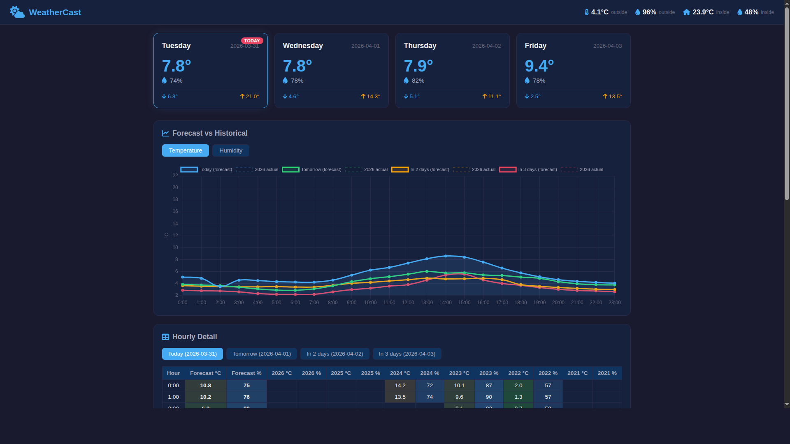
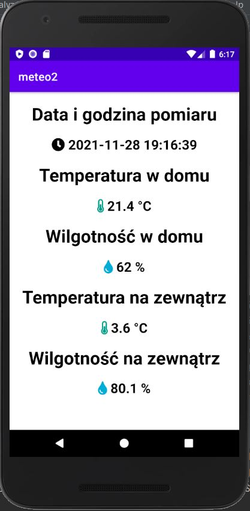
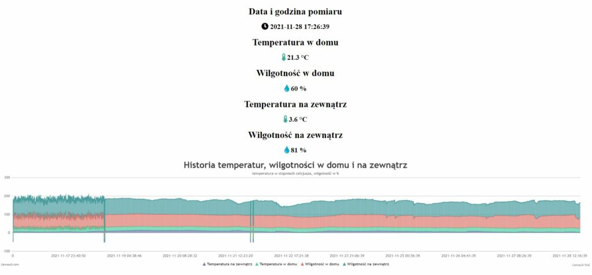
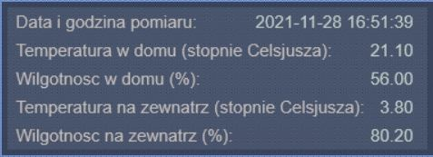

A full-stack IoT weather monitoring system that measures temperature and humidity both indoors and outdoors. The system spans the entire stack — from ESP8266 firmware reading hardware sensors, through a Raspberry Pi server with PHP/MySQL backend, to multiple client frontends including a web dashboard, Android app, and Windows desktop widget. The system also includes a weather forecast module that predicts temperature and humidity using weighted historical averages blended with recent trend extrapolation.
Check out the project on GitHub: Weather Station on GitHub
Back to Portfolio